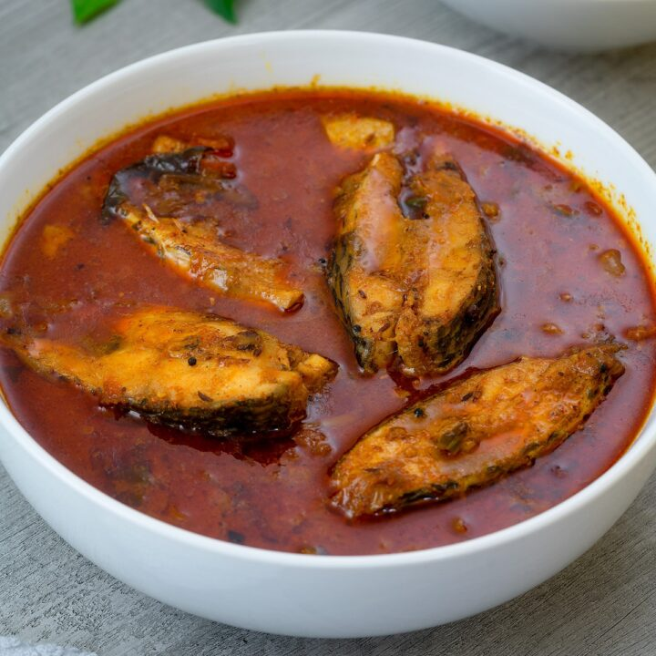

FishCurry-Recipie

Description
Generally in South India, this recipe is made in various ways using Tamarind juice.
Each recipe has a distinctive taste and smell. But the Fish curry that my grandmother
makes is very unique as she blends different spices together, powders it instantly and adds it to
the curry in the end. So I am sharing my grandmother’s special recipe with you all.
In yesteryear Andhra Fish recipes, garam masala was not used as much but later they started
using it in the curries. Andhra Fish curry is known for its hot and sour taste,
it tastes excellent with steaming hot Rice.
Tips
Fish:
- I have used Indian Salmon for this curry, you can use any variety of your taste.
- Clean the Fish 3-4 times with rock salt to get rid of the fishy smell.
Gravy:
- We need a generous quantity of Oil, for the curry to taste good.
- If you want to get more gravy, use more Onion puree along with the other masala ingredients.
- Adding the right proportions of Salt, Red Chilli powder and sourness and allowing it to cook on a low flame
until the Oil floats on top makes the Fish Curry delicious.
- After adding the Fish pieces, leave it to cook until the Oil floats on top. Do not stir frequently, you may
break the fish pieces up
- Fish curry always tastes better the next day.
Ingredients
FOR FISH MASALA POWDER :
- 1 tbsp Coriander seeds
- 7 Red chillies
- 1/2 tsp Fenugreek seeds
- 8 - 10 Garlic
FOR GRAVY :
- 300 gm Fish pieces
- 1/2 cup Oil
- 2 Sprigs Curry Leaves
- 2 Onions
- 4 Green Chillies
- 1 tbsp Ginger Garlic paste
- Salt
- 1/2 tsp Turmeric
- 1 tbsp Red chillies powder
- 1 tbsp Coriander powder
- 1/4 cup Tomato pieces
- 1/2 liter Water
- 200 ml Tamarind Juice (extracted from 50 gm of Tamarind)
- Coriander Leaves - Small bunch
Steps :
- Fry the masala ingredients on a low flame till they turn aromatic and blend them together and make a fine
powder.
- Blend Onions and Green chillies to a fine paste in a mixie jar.
- Add Oil to a pan, add Curry Leaves, Onions and fry until the onions turn golden brown.
- Add Salt and Ginger Garlic paste.
- Now add Turmeric, Coriander Powder, Red Chilli Powder and fry.
- Add Tamarind juice and water and boil the ingredients on a high flame.
- Arrange the fish pieces in this boiling mixture carefully and Lower the flame. Allow it to cook until the oil
floats on top.
- In 15 mins, the gravy will thicken and the oil floats on top, now add chopped Coriander Leaves and Masala
powder,
and stir carefully without disturbing the Fish pieces. Leave it for another 5 minutes, and your tasty Fish Curry
is ready to serve.